How To Make Quran Videos
1-Downloading Overlays:
-To make and quran video you have to download the overlays
-Go to youtube and type: +BlackGround.
-Download The blackGround From youtube using snaptube.
-if ur pc user use u can to the website notube.lol the
link
bellow:
Notube.lol
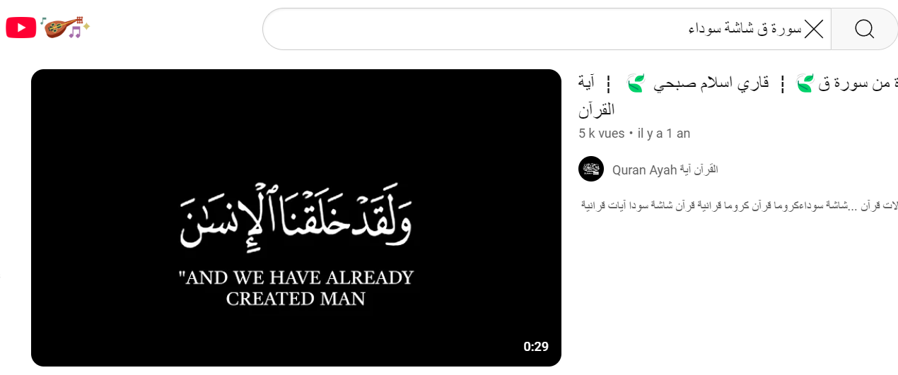
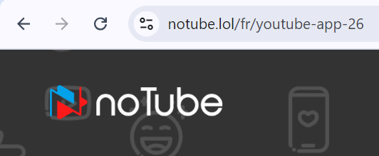
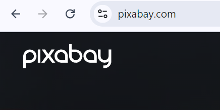
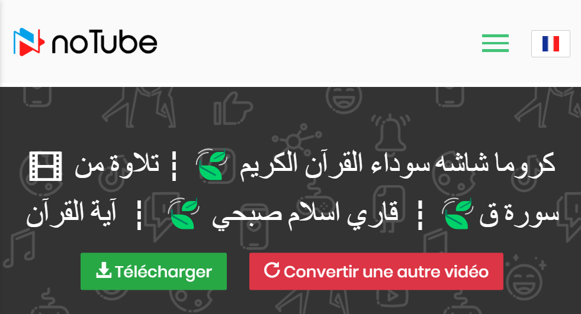
-Downloading Backgrounds:
-Your Quran Video Will Need a beautiful Background and usually it will be a
nature video
so to get a beautiful nature video for free and with prefect quality follow those steps :
-Go to Pixabay Website and type: In the
searchbar.
-Or You can simply Chose this from the Categories or filter.
-You can also CHoose the Quality You want , You can Head to the website form The
link
Below:
Pixabay.com
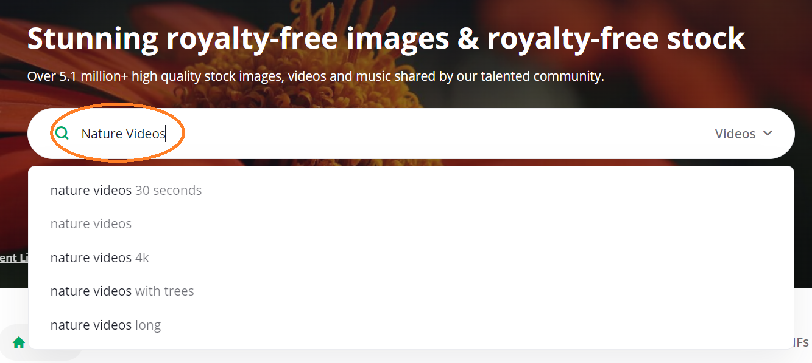
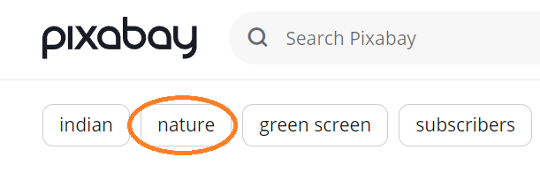
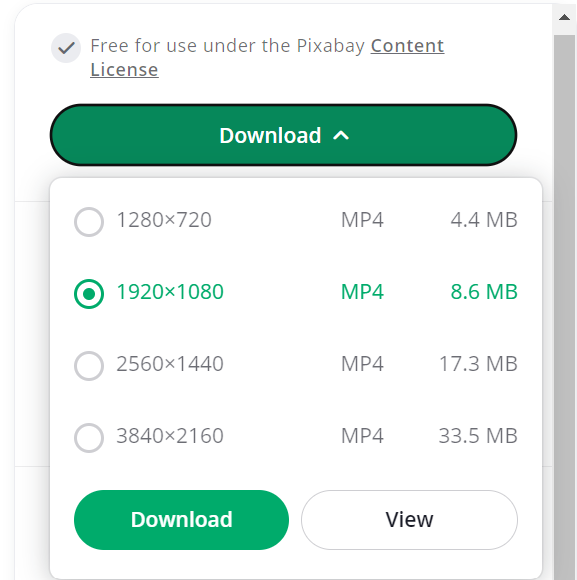
-Downloading CapCut:
-To Make the full video you will need to combined between the overlay and
the background and
for this case I recommend you to use CapCut:
-To Download CapCut Head To the official Website
-And If you are moblie user u can Download it from PlayStore.
-Here is the link to
CapCut.com
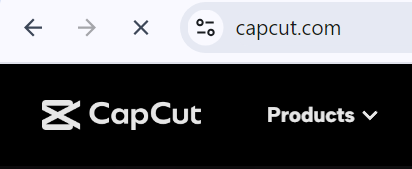
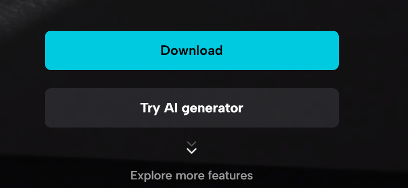
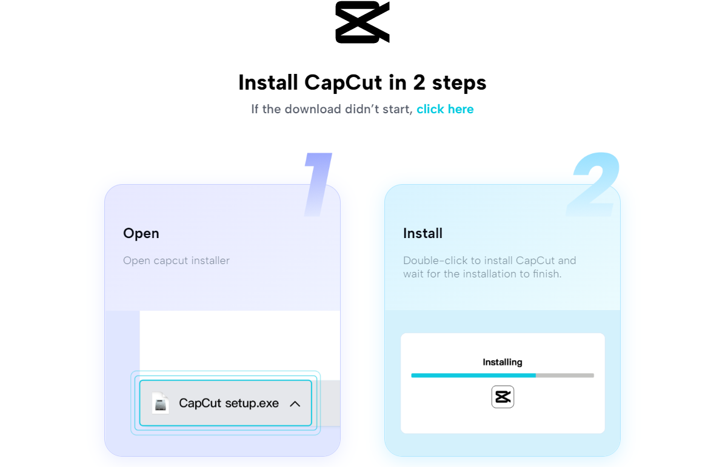
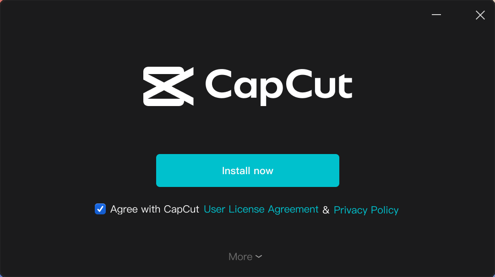
-Making The Video:
-Now This is The final Steps Where You are going to Open The app and Click
to create a
Project Then The following Steps:
-Go to media and Import The Both Video (background and The Overlay)
-Add each to to its section The background in media section and the overlay at
overlays section which is above the media section.
-Head Media Atrribute and scroll down until you find blend click it and chose
-As final Step Export your video with quality you want and your video is ready to
upload.
The following steps are the same step on mobile application
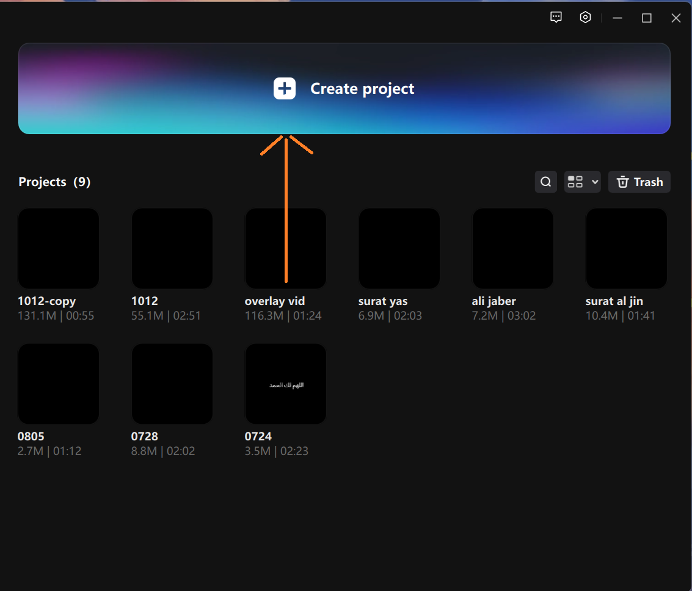
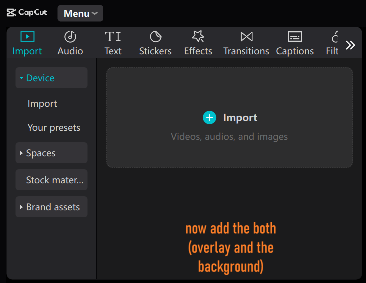
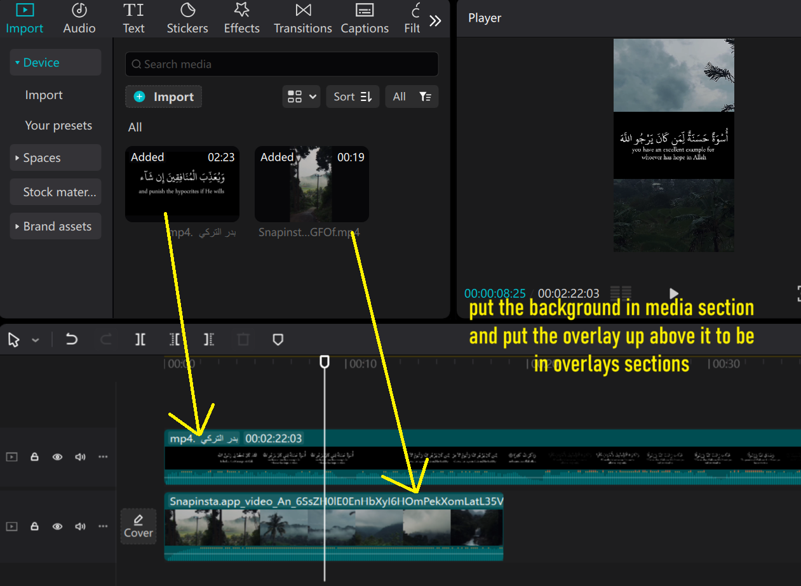
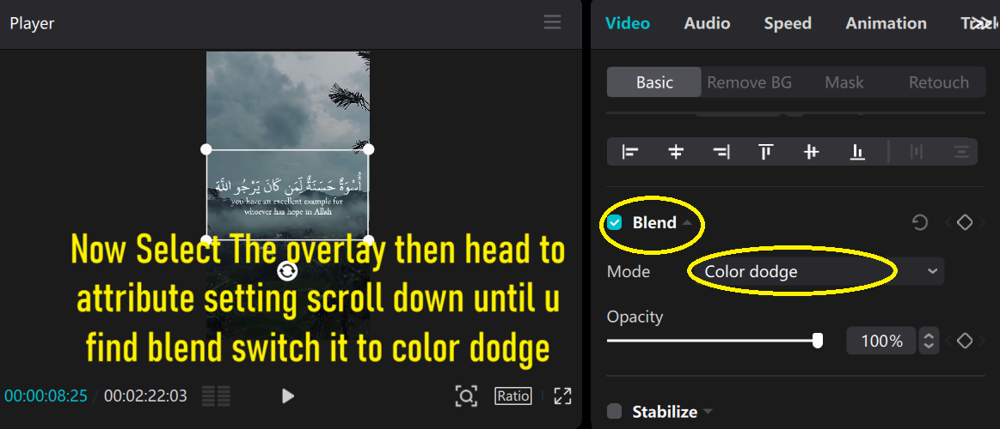